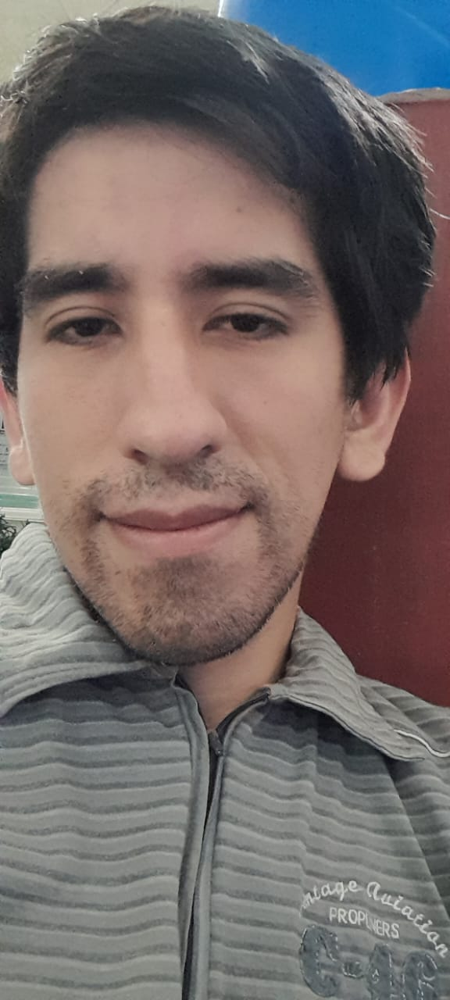
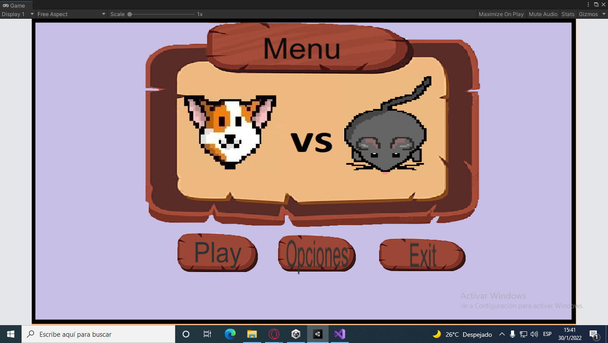
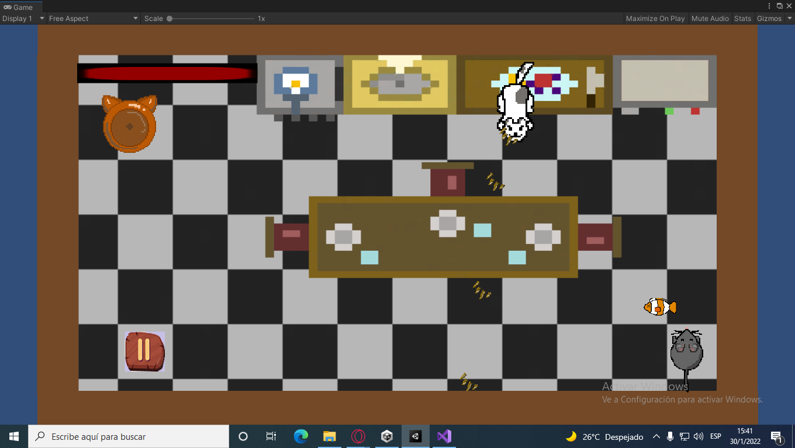

Gabrel Alejandro Urzagasti
Game-design de ecenario y programador de videojuegos
proyectos realizados
Proyecto 1 (AmiEnemigos)
Este juego fue echo en la Global Game Jam de enero de 2022
Gameplay 
Trata sobre un raton que debe ir dejandole comida al gato evitando ser golpeado por las garritas que dispara el mismo gato.
Proyecto 2 (Militar y furioso)
Este juego fue creado para presentacion de un trabajo practico final de primer año en el primer cuatrimestre de la carrera "TECNICATURA UNIVERSITARIA EN DISEÑO INTEGRAL DE VIDEOJUEGOS" todo esto fue echo en grupos de 5 integrantes para la materia de programacion orientada a objetos este juego fue echo respetando las condiciones de programacion nesesarias para su aprobacion. El juego cuenta con 3 niveles con su respectiva dificultad en cada uno
proyecto 3 (Un hombre en el Bosque Muerto "En desarrollo")
Este videojuego fue realizado para el primer año segundo cuatrimestre en la carrera "TECNICATURA UNIVERSITARIA EN DISEÑO INTEGRAL DE VIDEOJUEGOS" para la materia de programacion de videojuegos 1. Para este juego se tuvo en cuenta el uso del motor Unity y usar los conocimientos tanto vistos en la carrera como tambien vistos de forma autodidacta. Trata sobre un hombre perdido el cual deve llegar a un estremo para salvarse de los peligros del Bosque